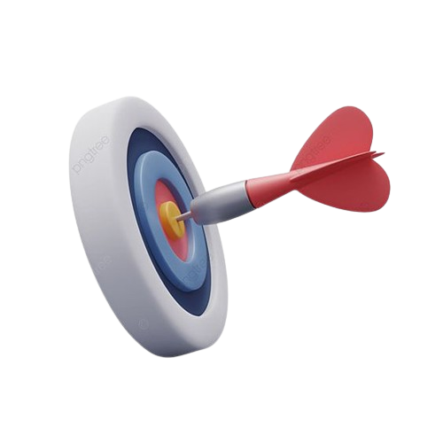
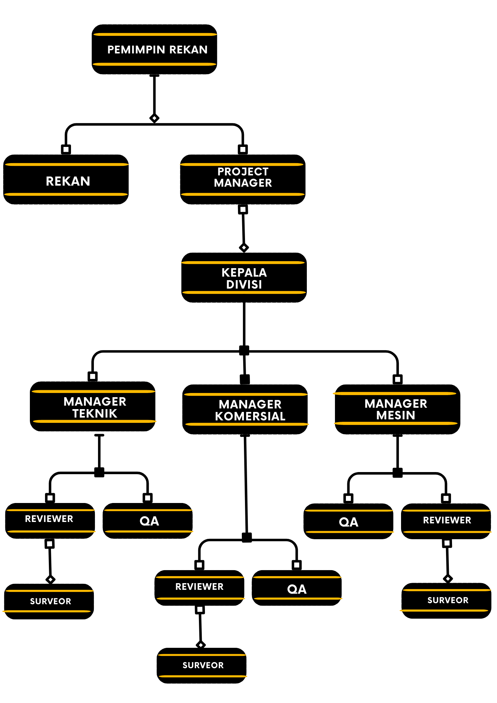

Siapa Kami ?
Tentang KamiKJPP Herman Meirizki & Rekan
KJPP Herman Ruslim didirikan pada September 2013 dan memperoleh izin Kantor Jasa Penilai Publik Kementerian Keuangan pada 18 September 2013 dengan Nomor Izin 3.13.0054.
Kemudian berubah menjadi KJPP Herman Meirizki and Rekan pada tanggal 11 Januari 2014 dan memperoleh Izin Usaha Kantor Jasa Penilai Publik dari Menteri Keuangan pada tanggal 10 Februari 2014 dengan Nomor Izin 2.14.0120.


Visi & Misi
Visi
Menjadi KJPP yang terbaik dan profesional di bidang pelayanan sesuai Standar Penilaian Indonesia (SPI).
Misi 
KJPP Herman Meirizki & Rekan berkomitmen untuk memberikan layanan penilaian mandiri, beretika, profesional dan berkualitas serta menerapkan manajemen risiko dalam jasa penilaian sehingga menghasilkan produk penilaian yang berkualitas dan standar.
Struktur Organisasi

